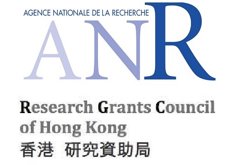

Jingcai Guo (郭 径材)
 Ph.D., MIEEE, MACM [English Version]
Ph.D., MIEEE, MACM [English Version]
工程学院
香港理工大学
通讯地址:香港特别行政区 香港理工大学 电子计算学系 PQ509室.
电子邮箱:[cscjguo AT comp.polyu.edu.hk] / [jingcai.guo AT gmail.com]
个人简介
郭径材博士毕业于香港理工大学，电子计算学系，导师为 Song Guo (郭嵩) 教授, Fellow of IEEE。 从2019到2020，郭径材作为访问研究员在澳大利亚悉尼大学开展研究工作, 合作导师为Dacheng Tao (陶大程) 教授, Fellow of IEEE，ACM, AAAS, IAPR，OSA，SPIE，IET/IEE，BCS，澳洲科学院院士，欧洲科学院外籍院士。 在此之前，他从日本早稻田大学获得硕士学位, 导师为Furuzuki Takayuki (古月敬之) 教授; 并从四川大学获得学士学位。
他的研究兴趣广泛地涉及多媒体和人工智能领域，尤其集中在零次学习 (zero-shot learning)、联邦学习 (federated learning)、计算机视觉 (computer vision)、信息安全 (cybersecurity) 和智能交通 (smart transportation) 等方面。 他是若干计算机领域顶级国际会议和期刊的程序委员会委员或审稿人，比如 AAAI、IEEE ICME、IEEE DataCom、IEEE TMM、IEEE TKDE、IEEE IOTJ、IEEE TETC 等； 是IEEE和ACM会员； 是香港政府 Hong Kong Ph.D. Fellow (2017)。
近期更新
-
[ 2020/08 ] [New] 我们的论文 "Dual-view Attention Networks for Single Image Super-Resolution" 被第28届 ACM International Conference on Multimedia (ACM MM 2020) 全文接收, 将于美国西雅图举办。
-
[ 2020/04 ] [New] 我们的论文 "A Novel Perspective to Zero-shot Learning: Towards an Alignment of Manifold Structures via Semantic Feature Expansion" 被期刊 IEEE Transactions on Multimedia (TMM) 全文接收.
-
[ 2019/09 ] 我将于2019.09 至 2020.03作为访问研究员访问 澳大利亚悉尼大学, 并和 Prof. Dacheng Tao (陶大程教授) 一同展开工作.
-
[ 2019/03 ] 我们的论文 "AMS-SFE: Towards an Alignment of Manifold Structures via Semantic Feature Expansion for Zero-shot Learnin" 被第20届 IEEE International Conference on Multimedia and Expo (ICME 2019) 全文接收, 将于中国上海举办。
-
[ 2019/02 ] 我们的2篇论文 "EE-AE: An Exclusivity Enhanced Unsupervised Feature Learning Approach" 和 "Adaptive Adjustment with Semantic Feature Space for Zero-Shot Recognition" 被第44届 IEEE International Conference on Acoustics, Speech, and Signal Processing (ICASSP 2019) 全文接收, 将于英国布莱顿举办。
教育背景
-
博士（Ph.D.): 香港理工大学, 2017/09 - 2020/12
导师: Prof. Song Guo, IEEE Fellow.
论文: Learning Robust Visual-semantic Mapping for Zero-shot Learning.
-
硕士: 日本早稻田大学, 2013/09 - 2015/09
导师: Prof. Furuzuki Takayuki.
论文: An Improved Incremental Training Approach for Support Vector Machine.
- 学士: 四川大学, 2009/09 - 2013/06
工作经历
-
(副/助理) 研究员 (Research Associate): 香港理工大学 & 香港理工大学深圳研究院, 2020/09 - 至今
-
访问研究员 (Visiting Researcher): 澳大利亚悉尼大学, 2019/09 - 2020/03
论文发表
正式发表
-
[ACM-MM] Dual-view Attention Networks for Single Image Super-Resolution,
Jingcai Guo, Shiheng Ma, Jie Zhang, Qihua Zhou, and Song Guo.
in Proceedings of the 28th ACM International Conference on Multimedia (ACM-MM '20), Seattle, WA, USA, 2020.
(CCF-A类, DOI: 10.1145/3394171.3413613).
[BibTeX] [EndNote]
-
[TMM] A Novel Perspective to Zero-shot Learning: Towards an Alignment of Manifold Structures via Semantic Feature Expansion,
Jingcai Guo and Song Guo.
IEEE Transactions on Multimedia (TMM)
(中科院SCI-1区 / JCR-Q1, DOI: 10.1109/TMM.2020.2984091).
[BibTeX] [EndNote]
-
[ICASSP] Adaptive Adjustment with Semantic Feature Space for Zero-Shot Recognition,
Jingcai Guo and Song Guo.
in Proceedings of the 44th IEEE International Conference on Acoustics, Speech, and Signal Processing (ICASSP '19), Brighton, United Kingdom, 2019.
(CCF-B类, DOI: DOI: 10.1109/ICASSP.2019.8682869).
[BibTeX] [EndNote]
-
[ICASSP] EE-AE: An Exclusivity Enhanced Unsupervised Feature Learning Approach,
Jingcai Guo and Song Guo.
in Proceedings of the 44th IEEE International Conference on Acoustics, Speech, and Signal Processing (ICASSP '19), Brighton, United Kingdom, 2019.
(CCF-B类, DOI: 10.1109/ICASSP.2019.8682891).
[BibTeX] [EndNote]
-
[ICME] AMS-SFE: Towards an Alignment of Manifold Structures via Semantic Feature Expansion for Zero-shot Learning,
Jingcai Guo and Song Guo.
in Proceedings of the 20th IEEE International Conference on Multimedia and Expo (ICME '19), Shanghai, China, 2019.
(CCF-B类, DOI: 10.1109/ICME.2019.00021).
[BibTeX] [EndNote]
-
[BDCAT] An improved incremental training approach for large scaled dataset based on support vector machine,
Jingcai Guo.
in Proceedings of the 3rd IEEE/ACM International Conference on Big Data Computing, Applications and Technologies (BDCAT '16), Association for Computing Machinery, New York, NY, USA, 2016.
(EI, DOI: 10.1145/3006299.3006307).
[BibTeX] [EndNote]
-
[ARXIV] Position-Aware Convolutional Networks for Traffic Prediction,
Shiheng Ma, Jingcai Guo, Song Guo and Minyi Guo.
ARXIV Technical Report.
(DOI: arXiv:1904.06187)
[BibTeX] [EndNote]
投/审稿中
由于 "审稿双盲原则", 部分近期工作暂不显示, 列表会经常更新。-
[投/审稿中] Conservative Novelty Synthesizing Networks for Malware Recognition in an Open-set Scenario,
Jingcai Guo, Song Guo, Shiheng Ma, Yuxia Sun, and Yuanyuan Xu.
Submitted.
-
[投/审稿中] On-device Learning Systems for Edge Intelligence: A Software and Hardware Synergy Perspective,
Qihua Zhou, Zhihao Qu, Song Guo, Boyuan Luo, Jingcai Guo, Zhenda Xu and Rajendra Akerkar.
Submitted.
项目经历
-
Zero-shot Learning: the Conception, Challenge and Our Work,
角色: 主持
资助机构: 香港研究资助局 (Hong Kong Research Grants Council), HKPFS-UGC/GEN/456/08,UGC/GEN/456/5/09, 2017-2020. -
面向边缘智能的资源配置与部署优化关键技术研究
角色: 参与者
资助机构: 国家自然科学基金 面上项目-61872310, 2019-2022. -
Transnational Partnership for Excellent Research and Education in Big Data and Emergency Management
角色: 参与者
资助机构: 挪威科研理事会 NRC (Norwegian Research Council) INTPART (International Partnerships for Excellent Education and Research) Programme, 2017-2020.
教学经历
-
助教, B2B & B2C E-commerce and Management, 2019春季学期.
-
助教, Information Systems Project Management, 2018秋季学期.
-
助教, Big Data Analytics, 2018春季学期.
- 助教, Web Advertising and Web Publishing, 2017秋季学期.
学术兼职
国际会议程序委员会委员 / 期刊审稿人
- 程序委员会委员:AAAI Conference on Artificial Intelligence (AAAI: 2021)
- 程序委员会委员:IEEE International Conference on Multimedia and Expo (IEEE ICME: 2019, 2020, 2021)
- 程序委员会委员:IEEE International Conference on Big Data Intelligence and Computing (IEEE DataCom: 2018)
- 审稿人:IEEE Transactions on Multimedia (IEEE TMM)
- 审稿人:IEEE Transactions on Knowledge and Data Engineering (IEEE TKDE)
- 审稿人:IEEE Internet of Things Journal (IEEE IoTJ)
- 审稿人:IEEE Transactions on Emerging Topics in Computing (IEEE TETC)
编委会成员
- Progress in Human Computer Interaction (2018/06-2020/06)
获得荣誉
- 香港政府博士奖学金 Hong Kong Ph.D. Fellowship
资助率 ~= 1.7%, 231/14000, 香港政府研究资助局 Hong Kong Research Grants Council, 2017 - 顶新国际奖学金 Ting Hsing International Scholarship
资助率 ~= 4.2%, 85/2000, 早稻田大学 & 顶新国际, 2013
资助机构
真诚地感谢如下机构为我的研究提供支持: